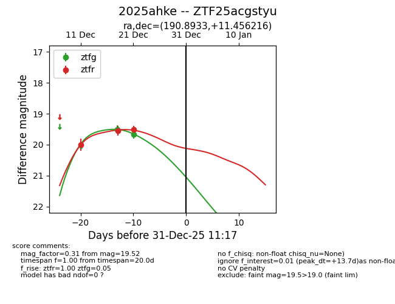
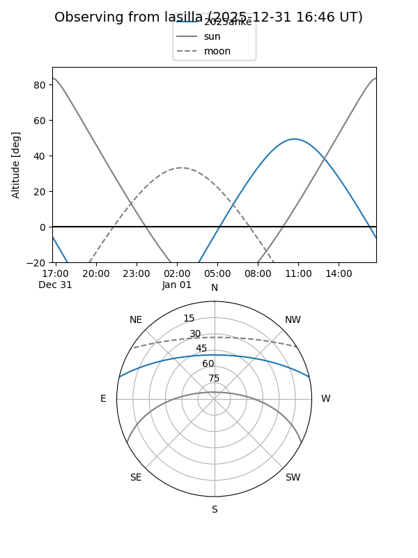
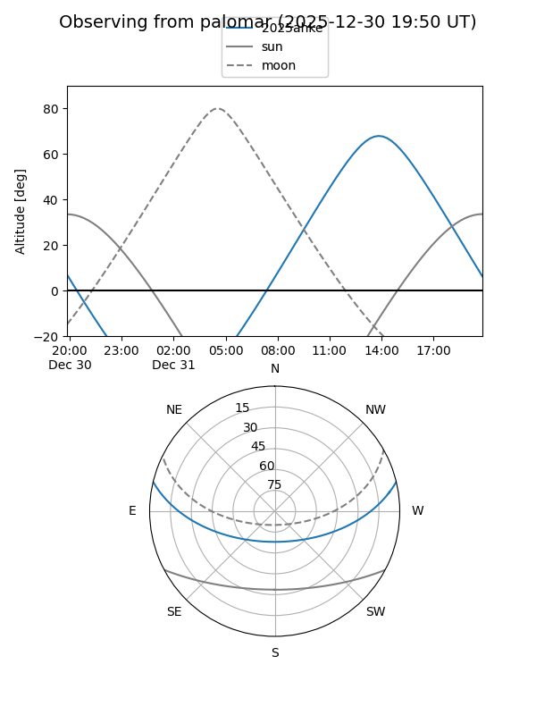
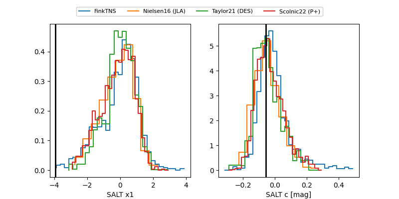

2025ahke
Target 2025ahke at 2025-12-18 15:27
Aliases and brokers:
FINK: fink-portal.org/ZTF25acgstyu
Lasair: lasair-ztf.lsst.ac.uk/objects/ZTF25acgstyu
ALeRCE: alerce.online/object/ZTF25acgstyu
TNS: wis-tns.org/object/2025ahke
YSE: ziggy.ucolick.org/yse/transient_detail/2025ahke
alt names
ZTF25acgstyu (ztf,fink_ztf)
2025ahke (tns,yse)
Coordinates:
equatorial (ra, dec) = 190.8933,+11.45622
equatorial (HMS+DMS) = 12:43:34.40,+11:27:22.38
galactic (l, b) = (295.8295,+74.21941)
Photometry
last ztfg=19.50, ztfr=19.56
1 ztfg, 2 ztfr detections
Lightcurve

Visibility


Additional plots
